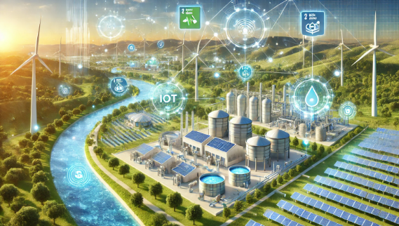
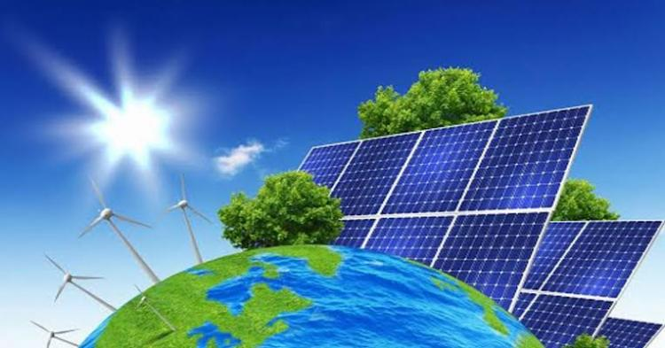
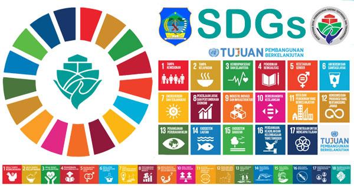

  
Salah satu program yang sudah saya bahas juga tadi yaitu UK - Indonesia Low Carbon Energy Programme yang menjadi salah satu upaya untuk Indonesia mengurangi pembakaran bahan bakar fosil ini dapat menjadi salah satu contoh dari kerjasama bilateral tetapi juga terdapat kerjasama multilateral di dalamnya mengapa? simak lebih lanjut penjelasannya sampai akhir! Dalam konteks ini UK memberikan dukungan - dukungan kepada Indonesia seperti :
1. Transfer teknologi :
- UK membagikan teknologi dan pengetahuan mereka ke Indonesia terhadap energi terbarukan dan efesiensi energi. Mereka sangat memanfaatkan dan menggunakan pengetahuan dan keahlian mereka dengan bagus.
2. Pendanaan Hijau dan pembiayaan :
- Hal - hal seperti ini pastinya juga membutuhkan biaya sehingga UK juga membantu Indonesia dengan berbagai lembaga dan inisiatif sehingga mendukung Indonesia untuk mengakses pembiayaan energi terbarukan, seperti pembiayaan hijau dan kredit karbon
Mekanisme utama dalam kerjasama ini adalah pembiayaan internasional yang difalitasi oleh kerjasama internaional dan lembaga internasional, seperti contohnya :
1. Green Finance :
Ini adalalah pendanaan untuk proyek - proyek energi terbarukan. Hal ini dapat mencakup juga mekanisme green bonds atau climate funds yang dapat memungkinkan untuk Indonesia mendapatkan dana yang dibutuhkan untuk mengembangkan insfrastruktur energi terbarukan.
2. Mekanisme :
Terdapat program seperti REED+ (Reducing Emissions from Deforestaion an Forest Degradarion) atau perdagangan karbon yang dimana negara - negara maju dan negara - negara berkembang terhubung disitu untuk mendukung satu sama lain untuk mengurangi emisi karbon. UK juga termasuk dalam kerjasama ini sehingga UK memberikan dukungan pembiayaan dan akses ke pasar karbon global. Indonesia sebagai negara berkembang juga termasuk dalam kerja sama REED+ atau perdagangan karbon ini. REDD+ ini termasuk dalam kerjasama multilateral yang dapat membantu tujuan SDGs 7.
.png)